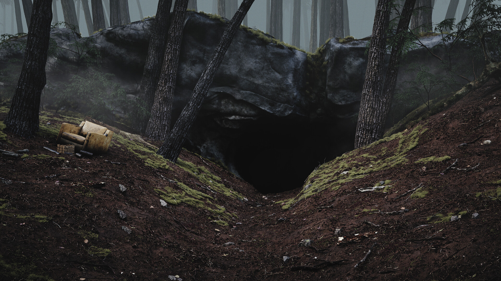

Winden Caves
The Winden Caves are a system of underground caverns beneath the small German town. These caves contain passages that lead between time periods and serve as the primary setting for temporal experiments. They are the heart of the conspiracy, where the God Particle was created and where time travel is made possible.
- Ancient cave systems with unexplained geometric structures
- Hidden entrance to temporal portal chambers